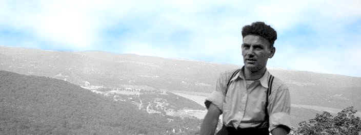
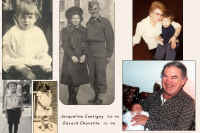

|

GÉRARD CHARETTE
THE ELEVENTH GENERATION IN QUÉBEC
A MAN OF THE QUIET REVOLUTION
Born on October 19, 1921, in Montréal,
Gérard is, all his life, a man of his time.
He belongs to the generation of men and women who carry out the Quiet
Revolution (Révolution tranquille) to give their children a better life and, in Québec, an opening onto the world.
Gérard throws himself into the new social movements, often from
their very beginnings: the right to education and its importance for
everyone, girls as much as boys; the
independence movement of the early 1960s; the health
trends such as naturopathy, homeopathy, natural foods and
therapeutic fasting, etc...
Gérard loves driving anything that rolls on four wheels: cars,
taxis, trucks, tankers or trailers; he takes part in driving-skill
contests and rallies. He loves to keep moving, meet lots of people, belong
to groups and associations of every kind, take courses, change jobs, and always have
one or two part-time jobs on top of his regular work. Since the
latter is often "on shifts", Gérard does not know
regular sleep or a regular life, and this for a long time.


Gérard serves at the end of the Second World
War in Europe.
Demobilized in the spring of 1946,
he marries Jacqueline Consigny on June 29. They have nine children.

|